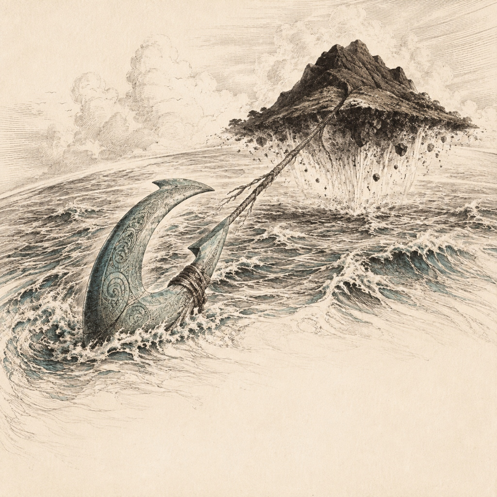
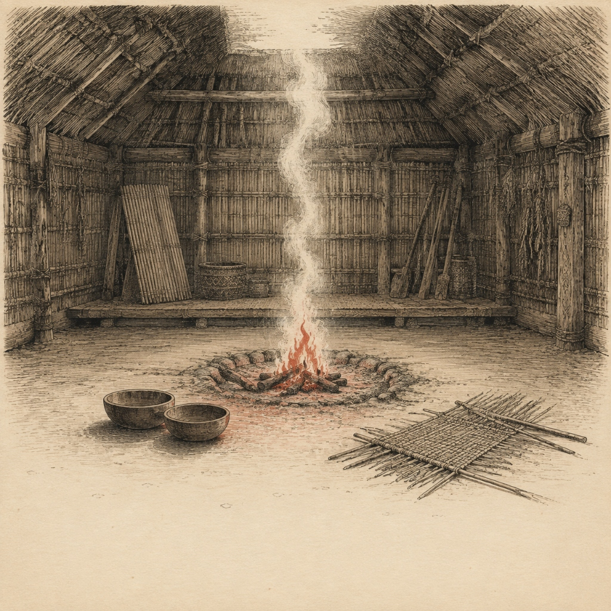
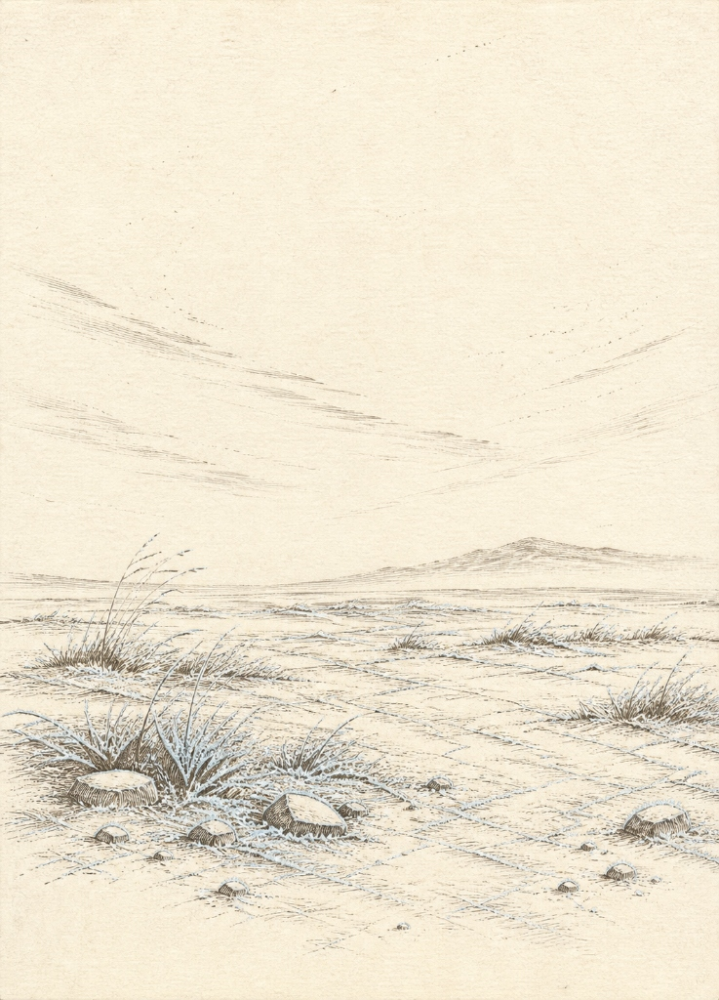
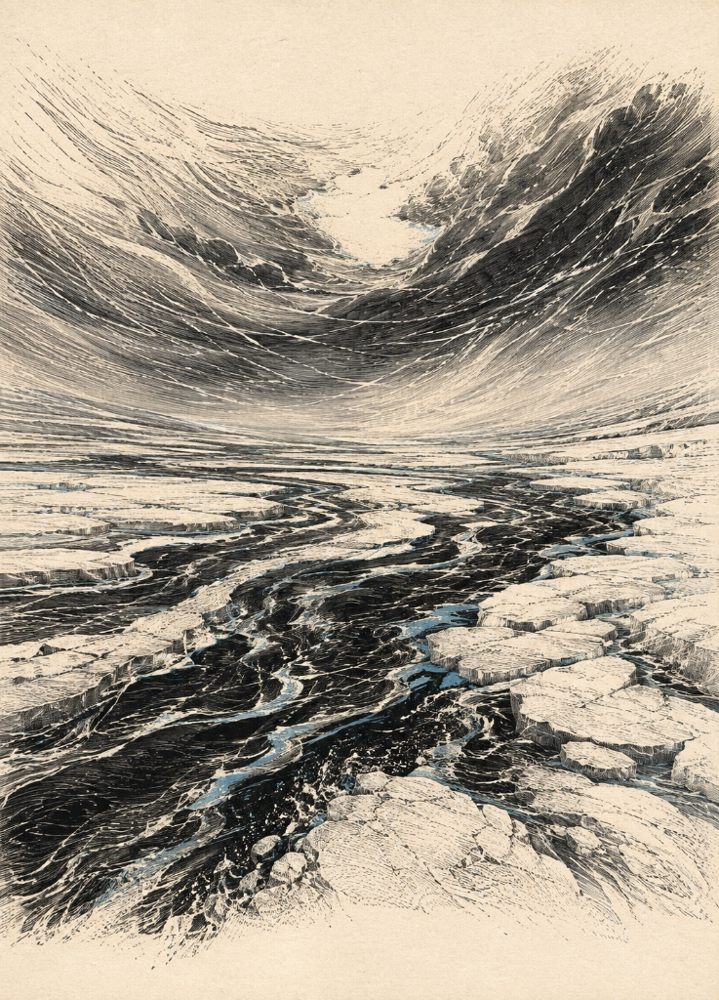

两尊神牌样张 (90 × 85 mm)
低墨钢版蚀刻 · 宣纸暖底渐隐 · 对应语素槽位

神恩／遗赠将自己的一张供奉及印记移到另一神的匹配空槽；补满时视你为收尾者。
“海仍在潮起潮落，人们却忘了岛屿曾从哪里升起。”

神恩／遗赠自己的心智上限恢复一点，并摸一张牌。
“炉火仍然燃烧，人们却忘了为归来者留一个位置。”
三季风暴牌样张 (63 × 88 mm)
初冬（白霜）· 深冬（冻河）· 极夜（黑潮）

初冬 · EARLY WINTER
1
白霜
依次为 1 号神座增加一点风化。
此风暴无严寒。
此风暴无严寒。
“远山披上第一道白霜，寒意在荒原上无声弥散。”
深冬 · MID WINTER
2
冻河
依次为 2 号神座增加一点风化。
严寒 每位有手牌的玩家选择弃一张，或燃烧一张。
严寒 每位有手牌的玩家选择弃一张，或燃烧一张。
“碎冰在河道中死寂，寒气咬碎了最后的流动。”

极夜 · POLAR NIGHT
12
黑潮
首张极夜先结算极夜合诵。依次为 1、2 号神座各增加一点风化。
严寒 每位有手牌的玩家必须燃烧一张。
严寒 每位有手牌的玩家必须燃烧一张。
“天穹塌落如巨浪，黑色冰潮席卷了最后的岸线。”
神牌状态交互测试
点击按钮切换“正常在场”与“濒死横置（两点风化）”状态
在《真名之火》规则中，神牌在积累两点风化后需要横置提示濒死。本版式保证在横置 90° 后，神牌左上角的真名槽、名称和神恩遗赠依然清晰可读。
神恩／遗赠将自己的一张供奉及印记移到另一神的匹配空槽；补满时视你为收尾者。
“海仍在潮起潮落，人们却忘了岛屿曾从哪里升起。”
神恩／遗赠自己的心智上限恢复一点，并摸一张牌。
“炉火仍然燃烧，人们却忘了为归来者留一个位置。”
风暴牌系统 · 叙事与机制
三季递进：初冬无严寒 → 深冬选择燃烧 → 极夜强制燃烧
初冬 · EARLY WINTER
1
白霜
依次为 1 号神座增加一点风化。
无严寒。
无严寒。
“远山披上第一道白霜，寒意在荒原上无声弥散。”
深冬 · MID WINTER
2
冻河
依次为 2 号神座增加一点风化。
严寒 每位有手牌的玩家选择弃一张，或燃烧一张。
严寒 每位有手牌的玩家选择弃一张，或燃烧一张。
“碎冰在河道中死寂，寒气咬碎了最后的流动。”
极夜 · POLAR NIGHT
12
黑潮
首张极夜先结算极夜合诵。依次为 1、2 号神座各增加一点风化。
严寒 必须燃烧一张。
严寒 必须燃烧一张。
“天穹塌落如巨浪，黑色冰潮席卷了最后的岸线。”
五大真名语素符号 (SVG)
低墨骨架 · 15mm 缩放高辨识度 · 矿物色调和
骨 · BONE
骨片、年轮、山脊
三节骨刻与中央山脊棱线。用于判定风化增减与安魂基础祭品。
风 · WIND
气流、羽线、回旋
连续流动的回旋涡流与双羽线。用于调整风暴牌堆顶与放置禁忌。
潮 · TIDE
潮线、水滴、涟漪
三重渐层古海图浪线与顶端悬水。用于回溯记忆与补充手牌。
炎 · FIRE
余烬、火舌、裂光
三叉古火塘火种与向上破裂的微光。燃烧时不损耗心智上限。
星 · STAR
星路、光点、冠环
四芒长星与同心天体环冠。用于记录萨满传火余音。
六位萨满个人纹章 (供奉印记与面板徽标)
各具神异 · 极简剪影 · 制作成 20mm 印记标记
渡门
渡魂人 · SHAMAN 01
两道对向岸线围住一叶轻舟。守艺：移渡供奉牌。
冰裂
听冬者 · SHAMAN 02
同心冰层被一道锐利折线贯穿。守艺：预见风暴。
骨刻
刻骨者 · SHAMAN 03
骨版上的三道斜切刀痕。守艺：任意手牌充当骨。
捧火
守火人 · SHAMAN 04
环抱手形弧线稳托一枚火星。守艺：燃烧解救濒死之神。
绳结
织名者 · SHAMAN 05
多股细绳在中心盘结闭合。守艺：唤醒神获得额外余音。
岔路星
问途者 · SHAMAN 06
三向分岔路径上方悬一星。守艺：关键回合任意牌代语素。
《真名之火》样张打印 · 第一页：卡牌（佳能 G3812 适配版 · 沿浅细角标十字裁切）
A4 纸张 · 100% 无缩放
神恩／遗赠将自己的一张供奉及印记移到另一神的匹配空槽；补满时视你为收尾者。
“海仍在潮起潮落，人们却忘了岛屿曾从哪里升起。”
神恩／遗赠自己的心智上限恢复一点，并摸一张牌。
“炉火仍然燃烧，人们却忘了为归来者留一个位置。”
初冬
1
白霜
依次为 1 号神座增加一点风化。
无严寒。
无严寒。
“远山披上第一道白霜，寒意在荒原上无声弥散。”
深冬
2
冻河
依次为 2 号神座增加一点风化。
严寒 弃一张或燃烧一张。
严寒 弃一张或燃烧一张。
“碎冰在河道中死寂，寒气咬碎了最后的流动。”
极夜
12
黑潮
首张先合诵。为 1、2 号神座各增一点风化。
严寒 必须燃烧一张。
严寒 必须燃烧一张。
“天穹塌落如巨浪，黑色冰潮席卷了最后的岸线。”
《真名之火》样张打印 · 第二页：萨满供奉印记与语素标记（各印记配4枚，直径约22mm）
剪下可直接贴于20-25mm圆木片或厚卡纸上
六位萨满供奉印记（每位4枚，共24枚）：
渡门 1
渡门 2
渡门 3
渡门 4
冰裂 1
冰裂 2
冰裂 3
冰裂 4
骨刻 1
骨刻 2
骨刻 3
骨刻 4
捧火 1
捧火 2
捧火 3
捧火 4
绳结 1
绳结 2
绳结 3
绳结 4
岔路 1
岔路 2
岔路 3
岔路 4
五真名语素指示物与神恩备用标记：
骨
风
潮
炎
星
禁忌